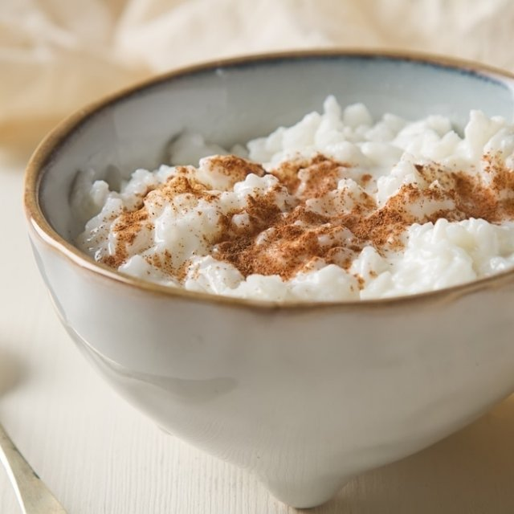
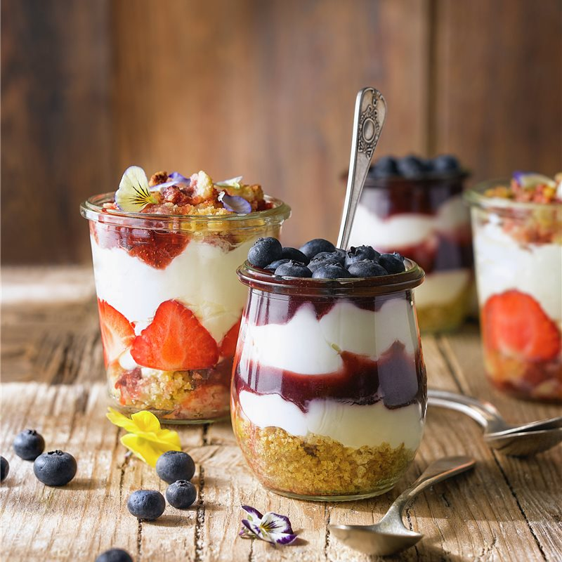

1. Arroz con leche
Ingledientes
Para 5 personas
Arroz redondo ...................................................................................... 200 g
Leche entera ..................................................................................................................... 2 L
Pizca de cascara de limon o naranja ........................................................................................................................... 2
Rama de canela ......................................................................... 2
Azucar ......................................................................... 140 g
Manteca ......................................................................... 20 g
Canela en polvo
Como hacer Arroz con leche tradicional
Dificultad: Facil
Tiempo total .............. 25 m
Cocción ............ 25 m
En una olla o cazuela, ponemos la leche, el arroz, las cáscaras de los cítricos y la rama de canela. Calentamos a fuego medio mientras no dejamos de remover. Cuando esté caliente, pero que no llegue a ebullición, pues la leche pasados los 95-100ºC se quema y coge un regusto muy desagradable, dejamos cocer. Removemos cada cinco minutos, para asegurarnos que el arroz con leche no se pegue y para liberar el almidón. Así nos quedará más cremoso. Recuerda que no debe llegar a hervir a borbotones fuertes en ningún momento. Pasados unos 45 minutos, cuando el grano esté casi hecho – recuerda remover cada 5 minutos – añadimos el azúcar. Dejamos cocinar 10 minutos más, hasta que el arroz ahora sí que sí, esté bien blando. Apagamos el fuego y añadimos la mantequilla. Quitamos las cáscaras y la canela en rama y mezclamos bien. Dejamos templar. Sigue mezclando de vez en cuando mientras lo dejes templar, para que no salga costra por la superficie. Cuando haya templado algo, ponemos el arroz con leche en cuencos individuales. Puedes decorar con un trocito de la rama de canela que usaste para infusionar. Espolvorea encima un poco de canela molida, para darle el toque final.
2. Tarta de manzana

Ingledientes
Para 6-8 personas
Galletitas tipo María .......................................................................................... 100 g
Manteca ................................................................................................... 50 g
Manzanas madianas ............................................................................................................. 6
Leche ............................................................................................. 200 ml
Harina 0000 ............................................................................................. 200 g
Azucar ................................................................................... 200 g
Mermelada de melocotón ............................................................................................. (opcional)
Como hacer Tarta de manzana
Dificultad: Facil
Tiempo total .............. 15 m
Elaboracion ............ 15 m
Trituramos la galleta. Para ello puedes hacerlo con una batidora americana, una batidora manual o introduciendo las galletas en una bolsa y sacudiéndolas con un rodillo. Después las ponemos en un plato, le añadimos la mantequilla derretida y mezclamos bien con una cuchara. Quedará como una especie de arena gruesa húmeda. Ésto, será la base de nuestra tarta de manzana. Ponemos esta mezcla en el fondo de un molde desmontable para tartas. Con estas cantidades, en uno de 18-20cm, estará bien. Untamos el molde con aceite o con más mantequilla derretida (para que no se pegue la tarta) en introducimos la mezcla de galleta y mantequilla. Esta mezcla será la base de la tarta de manzana. La aplastamos y extendemos por toda la superficie del molde, de tal manera que quede bien compacta. Ésta será la base de nuestra tarta de manzana. Ahora, de nuevo en una batidora americana o un en un vaso batidor, añadimos 4 de las manzanas peladas, sin el corazón y cortadas en cubo, la harina, la leche y el azúcar. Trituramos todo bien. Introducimos esta mezcla -que se tratará simplemente del relleno de la tarta de manzana- sobre la base de galleta y mantequilla. Encima, ponemos las otras dos manzanas, también peladas y cortadas en láminas muy finas. Colócacas un poco a lo loco, al azar, o intenta darles una forma armoniosa, si te importa la decoración.
Introducimos todo en el horno, previamente calentado a 180ºC. Dejamos aquí durante alrededor de 50 minutos. Pasado el tiempo, la sacamos y dejamos templar la tarta de manzana un poco. Un consejo. En este caso, no te fies del viejo truco de pinchar con el palillo porque esta tarta, no termina de cuajar hasta que se haya enfriado por completo. Por ello, mejor esperar a que se enfríe. Una vez fuera del horno, y después que se haya templado un poco, la desmoldamos y la pintamos por toda su superficie con la mermelada. Le dará un toque muy brillante y mejorará mucho su sabor
3. Mini Cheesecake
Ingledientes
Para 4 unidades
Galletitas tipo María ................................................................................................. 50 g
Manteca ................................................................................................... 35 g
Azucar ..................................................................................................... 15 g
Crema liquida ............................................................................................................... 175 g
Queso crema ...................................................................................................... 250 g
Escencia de vainilla ................................................................................................... 5 ml
Azucar impalpable ........................................................................ 95 g
Mermelada de frutos rojos ............................................................................................................ 50 g
Jugo de limón ............................................................................................................ 30 ml
Frambuesa u otro frutos rojos pra decorar
Sal
Menta fresca
Como hacer Cheesecake en vasitos
Dificultad: Facil
Tiempo total .............. 30-40 m
Elaboracion ............ 10 m
Reposo ........... 20-30 m
Trituramos las galletas sin llegar a pulverizar, no pasa nada si notamos trozos más grandes que otros. Fundimos la mantequilla, en microondas o al baño María, y la agregamos a la galleta triturada junto con el azúcar y un pelizco de sal. Mezclamos bien y repartimos en cuatro vasitos. A continuación preparamos el relleno y, para ello, montamos la nata (que habrá de estar bien fría) con unas varillas eléctricas (o a mano) hasta que esté bien firme. Agregamos el queso crema, previamente batido, la esencia de vainilla y el azúcar glacé. Removemos hasta obtener una crema homogénea, pasamos a una manga pastelera y rellenamos los vasitos. En un cacito calentamos la mermelada de frutos rojos junto con el zumo de limón. Retiramos del fuego en el momento que empiece a hervir y dejamos enfriar completamente antes de cubrir cada cheesecake con ella. Terminamos decorando con frambuesas, moras, etc y unas ramitas de menta fresca.